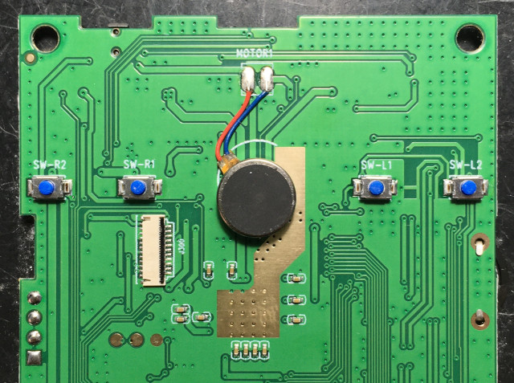
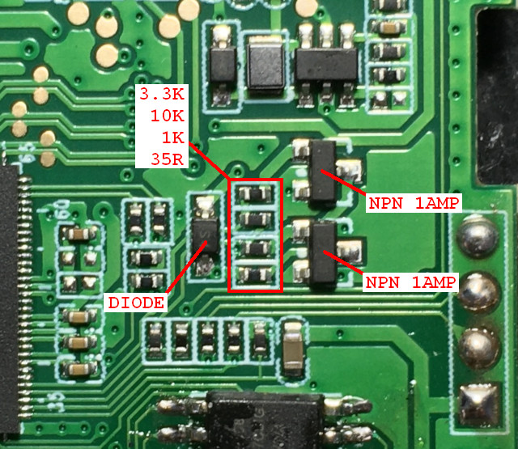
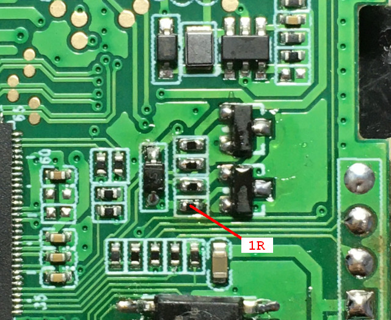
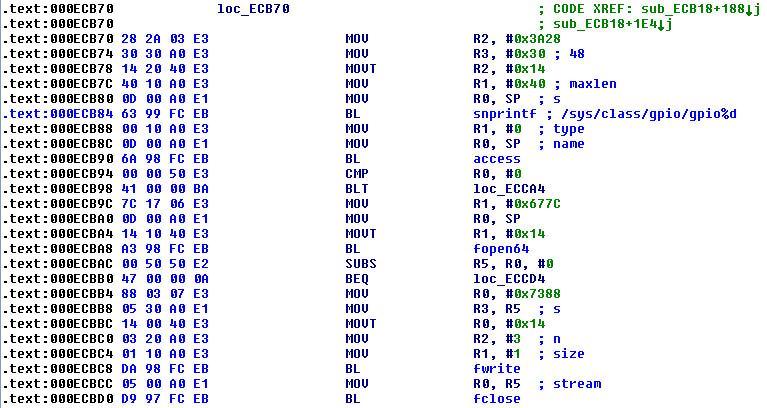

Steward
分享是一種喜悅、更是一種幸福
掌機 - Miyoo Mini - 增強振動馬達
其實司徒原本是想修復馬達不振的問題，但是，在改造振動馬達後，不振動的問題竟然不見了，因此，司徒只好分享一下如何增強振動馬達的強度

司徒目前手上沒有電路圖，因此，花了時間找了一下，位置如下

這個電路真是熟悉，司徒當初在幫小橫米上振動馬達時，就是使用達靈頓電路，原因是司徒手上剛好沒有PNP電晶體，想不到剛好在Miyoo Mini掌機身上也看到這個電路...
司徒把35R改成1R(電阻越小，振動強度越大)

司徒花了一些時間查看Miyoo Mini系統，竟然找不到如何控制振動馬達的方式，絕望之際，發現PS模擬器有支援振動功能，因此，逆向了一下，發現Miyoo Mini是使用GPIO-48控制振動馬達

控制方式如下：
# echo 48 > /sys/class/gpio/export # echo out > /sys/class/gpio/gpio48/direction # echo 0 > /sys/class/gpio/gpio48/value # echo 1 > /sys/class/gpio/gpio48/value # echo 48 > /sys/class/gpio/unexport